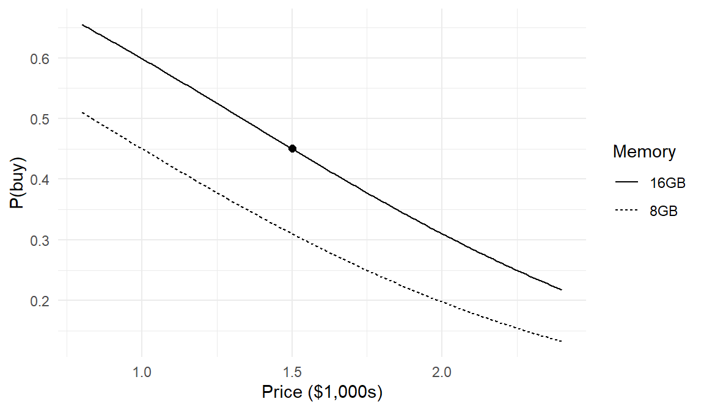

set.seed(1234)
R <- 1000
I <- vector(length=R)
for(r in 1:R) {
eps <- runif(1, min=-1, max=1)
h <- 0.5 + eps
I[r] <- as.integer(h > 1)
}
mean(I)[1] 0.258It is instructive to start with the first sentence of Train (2009) Section 1.3, “Discrete choice analysis consists of two interrelated tasks: specification of the behavioral model and estimation of the parameters of that model” (emphasis added). Notably, chapters 1–7 of Train (2009) only specify models; there is not even a hint of model estimation. We too begin with a focus on model specification.
Let me be clear: many students will see \(y\) and \(x\) later in this section and immediately think about “fitting” a model; that is, they assume they have data that they will put into an estimation routine to find estimates of the parameters of the model. We are not there yet! At this early stage in the book, we are only specifying models; that is, listing sets of assumptions about data generating processes and exploring the implications of those assumptions. There are no data yet. There will be parameters introduced in our choice of model specification, but we are not yet estimating those parameters. Have patience, we will eventually do these things.
Train denotes the outcome in any given choice situation as \(y\), determined by some observable factors collected in the vector \(\mathbf{x}\) and some unobservable factors collected in the vector \(\boldsymbol{\varepsilon}\). The factors (\(\mathbf{x}\) and \(\boldsymbol{\varepsilon}\)) relate to the agent’s choice (\(y\)) through a function \(y = h(\mathbf{x}, \boldsymbol{\varepsilon})\). We assume for the moment that we know \(h(\cdot)\) and that \(\mathbf{x}\) and \(\boldsymbol{\varepsilon}\) are length-one vectors (i.e., scalars) denoted \(x\) and \(\varepsilon\).
Since we do not observe \(\varepsilon\), we can’t predict \(y\) exactly. Instead, we focus on the probability of \(y\), that is:
\[ \begin{aligned} p(y|x) &= \Pr \left( \varepsilon \textrm{ such that } h(x,\varepsilon)=y \right) \\ &= \Pr \left( I \left[ h(x,\varepsilon)=y \right] = 1 \right) \\ &= \int I \left[ h(x,\varepsilon)=y \right] f(\varepsilon) \, d\varepsilon \end{aligned} \tag{1.1}\]
Read the last line slowly, because the rest of this book lives inside it. The indicator function \(I[\cdot]\) equals 1 when the unobserved factors produce the outcome \(y\) and equals 0 otherwise. The integral averages that indicator over all the values the unobserved factors might take, weighting by their density \(f(\varepsilon)\). In words: the probability of an outcome is the share of the unobserved-factor distribution that produces that outcome. Every choice probability we compute in this book — logit, probit, nested, mixed, hierarchical — is an instance of Equation 1.1 with a particular choice of \(h\) and \(f\).
For certain special choices of \(h\) and \(f\), a closed-form expression1 for the integral is available. But more generally, for almost any choice of \(h\) and \(f\), we can approximate the integral through simulation. Train provides pseudo code on how to do so:
This procedure is called Monte Carlo integration, and it works because of the Law of Large Numbers: the average of many independent realizations of a random quantity converges to its expectation, and Equation 1.1 is exactly an expectation — the expectation of the indicator \(I[h(x,\varepsilon)=y]\) taken over \(\varepsilon\). We will lean on this idea repeatedly: in Chapter 12 it will sit inside a likelihood function, and in Chapter 15 the same “average over draws” logic will summarize posterior distributions.
Next we look at two examples where we use this procedure to approximate the \(p(y|x)\) integral. The first example I made up, and it is deliberately abstract — no economics, just mechanics. The second example is the binary logit model discussed by Train, which we will dress in the story that carries through the entire book: a shopper deciding whether to buy a laptop.
Let’s first set up a toy example to demonstrate how simulation can approximate the \(p(y|x)\) integral. Suppose \(x=0.5\) and \(\varepsilon\) is uniformly distributed between \(-1\) and \(1\). Define \(h(x, \varepsilon)\) to be:
\[ h(x, \varepsilon) = \begin{cases} 0 & \text{if } x + \varepsilon < 0 \\ 1 & \text{if } x + \varepsilon \in [0,1] \\ 2 & \text{if } x + \varepsilon > 1 \end{cases} \tag{1.2}\]
We’ll focus on the outcome \(y=2\). You can probably intuit that the \(p(y=2 | x) = 0.25\) since only one quarter of the time will \(\varepsilon\) be sufficiently positive to make \(x + \varepsilon > 1\).2 Nevertheless, let’s approximate the integral representation of \(p(y=2|x)\) through simulation to ensure we understand the process.
To walk you through the code, we first set a seed so that the pseudo-random numbers generated by runif() can be replicated exactly each time the code is run (even on different computers). We then specify that we will use 1,000 draws in the simulation and we create a vector I to hold our results. The simulation occurs via a for() loop where each time through the loop we take a draw of \(\varepsilon\), calculate \(0.5 + \varepsilon\) and check whether that sum is greater than one. If so, then \(h(x,\varepsilon)=2\) matching the value of \(y\) for the choice probability we want to assess — i.e., \(p(y=2|x)\) — and thus we store a \(1\) in the \(r^\textrm{th}\) position of I; otherwise we store a 0. We then average the values in I to get our approximation of \(p(y=2|x)\).
set.seed(1234)
R <- 1000
I <- vector(length=R)
for(r in 1:R) {
eps <- runif(1, min=-1, max=1)
h <- 0.5 + eps
I[r] <- as.integer(h > 1)
}
mean(I)[1] 0.258The simulated value 0.258 approximates the exact value 0.25 and can be made closer by increasing the number of draws used in the simulation.
Notice that we took draws of \(\varepsilon\) to empirically approximate the integral of \(p(y|x)\), but we should not think of these draws as “data” in the sense of a dataset. They are ancillary numbers generated from the distribution of \(\varepsilon\) that we use to approximate the integral.
R users will recognize that we can shorten the code by taking advantage of R’s vectorized functions and its conversion of boolean values to 0/1 when used in mathematical operations. Here is a shorter implementation of the simulation; whether it’s “better” code is a matter of preference.
set.seed(1234)
R <- 1000
mean( runif(R, min=-1, max=1) + 0.5 > 1 )[1] 0.258That’s it. If you can generate pseudo-random draws from the density \(f\) and you know \(h\), approximating a choice probability by simulation might only require a handful of lines of code.
How good is the approximation? Since each \(I^{(r)}\) is a Bernoulli random variable with success probability \(p = 0.25\), the simulation average has standard error \(\sqrt{p(1-p)/R}\), which for \(R=1{,}000\) is about 0.014. Quadrupling the number of draws halves the standard error — the familiar (and, when you are impatient, infuriating) square-root rate of Monte Carlo methods. We will return to the accuracy of simulated probabilities with much more care in Chapter 12, where it directly affects the quality of our parameter estimates.
The toy example had no behavioral content: \(h\) was an arbitrary rule. Discrete choice models earn the name behavioral by deriving \(h\) from a model of decision-making. The standard construction — which we will use, in increasingly elaborate forms, for the rest of the book — is the random utility model: the decision-maker assigns a utility to each available action and picks the action with the highest utility.
Here is the story we will grow throughout this book. A shopper is considering a laptop. The laptop has observable attributes — its price, its memory, its screen size, its brand — and the shopper has some overall assessment of how much they’d like to own it, which also depends on many things we will never observe: their mood, their current machine’s death rattle, a looming deadline. We collect the observable attributes in a vector \(\mathbf{x}\) and bundle everything unobservable into a scalar \(\varepsilon\).
The “binary” part of the model’s name refers to the aspect of the model whereby the decision maker does one of two things; they either take an action (\(y=1\), buy the laptop) or not (\(y=0\), walk away). To tie this model into a framework of behavior, we start with a utility function \(U\) for the action:
\[ U(\mathbf{x}, \boldsymbol{\beta}, \varepsilon) = \mathbf{x}'\boldsymbol{\beta}+ \varepsilon \tag{1.3}\]
where \(\mathbf{x}\) is a vector of observable explanatory variables, \(\boldsymbol{\beta}\) is a vector of parameters that through the functional form \(\mathbf{x}'\boldsymbol{\beta}\) effectively serve as weights on the attributes, and \(\varepsilon\) is a scalar collecting the value of everything relevant to the shopper but unobserved by the researcher. The utility of not buying is normalized to zero — a harmless-seeming convention that we will scrutinize carefully in Chapter 7 (identification) and again in Chapter 22 (the outside option).
The piece the researcher can compute, \(\mathbf{x}'\boldsymbol{\beta}\), is called the representative utility and gets its own letter, \(V\); the model says total utility is representative utility plus noise, \(U = V + \varepsilon\). The split matters: \(V\) is where the parameters live, and \(\varepsilon\) is what the integral in Equation 1.1 averages over.
Notice that \(h\) has grown an argument: once we specify utility, the parameters \(\boldsymbol{\beta}\) enter the behavioral rule, so we write \(h(\mathbf{x}, \boldsymbol{\beta}, \varepsilon)\) and condition the choice probability on \(\boldsymbol{\beta}\) as well — \(p(y|\mathbf{x},\boldsymbol{\beta})\). The framework of Equation 1.1 is unchanged; \(\boldsymbol{\beta}\) simply rides along with \(\mathbf{x}\). The shopper buys when buying is better than not buying, so the behavioral rule \(h\) is:
\[ h(\mathbf{x}, \boldsymbol{\beta}, \varepsilon) = \begin{cases} 0 & \text{if} \hspace{1ex} U(\mathbf{x}, \boldsymbol{\beta}, \varepsilon) \le 0 \\ 1 & \text{if} \hspace{1ex} U(\mathbf{x}, \boldsymbol{\beta}, \varepsilon) > 0 \end{cases} \tag{1.4}\]
The “logit” part of the model’s name refers to the choice of \(f\). The binary logit model assumes \(\varepsilon\) follows the standard logistic distribution:
\[ f(\varepsilon) = \frac{e^{-\varepsilon}}{(1+e^{-\varepsilon})^2} \tag{1.5}\]
This particular pairing of \(h\) and \(f\) is one of the special cases where the integral in Equation 1.1 has a closed form. Let me show you why. Integrating Equation 1.5 gives the logistic CDF, \(F(\varepsilon) = 1/(1+e^{-\varepsilon})\) (differentiate it to confirm you get \(f\) back). The shopper buys when \(\mathbf{x}'\boldsymbol{\beta}+ \varepsilon > 0\), i.e., when \(\varepsilon > -\mathbf{x}'\boldsymbol{\beta}\), so \[ p(y=1|\mathbf{x},\boldsymbol{\beta}) = \Pr(\varepsilon > -\mathbf{x}'\boldsymbol{\beta}) = 1 - F(-\mathbf{x}'\boldsymbol{\beta}) = 1 - \frac{1}{1+e^{\mathbf{x}'\boldsymbol{\beta}}} = \frac{e^{\mathbf{x}'\boldsymbol{\beta}}}{1+e^{\mathbf{x}'\boldsymbol{\beta}}} \] No indicator, no integral sign left standing — that is what “closed form” buys us:
\[ p(y=1 | \mathbf{x}, \boldsymbol{\beta}) = \frac{e^{\mathbf{x}'\boldsymbol{\beta}}}{1 + e^{\mathbf{x}'\boldsymbol{\beta}}} \tag{1.6}\]
Let’s make it concrete. Suppose the laptop on offer costs $1,500 and has 16GB of RAM (an upgrade over a base 8GB configuration). We describe it with the vector \(\mathbf{x}= (1, 1.5, 1)\): a constant, the price in thousands of dollars, and an indicator for the 16GB memory upgrade. And suppose the weights are \(\boldsymbol{\beta}^\ast = (1.0, -1.2, 0.6)\) — the asterisk is our standing notation for true parameter values, the ones the data generating process actually uses, as distinct from candidate values \(\boldsymbol{\beta}\) we will later evaluate and estimates \(\hat{\boldsymbol{\beta}}\) we will later compute. The three values: a baseline pull toward buying, a distaste for price, and a taste for memory.3 Then
\[ \mathbf{x}'\boldsymbol{\beta}= (1)(1.0) + (1.5)(-1.2) + (1)(0.6) = -0.2 \]
and the closed-form probability of purchase is
\[ p(y=1 | \mathbf{x}, \boldsymbol{\beta}) = \frac{e^{-0.2}}{1+e^{-0.2}} = 0.45 \tag{1.7}\]
Even though we have the closed form, let’s approximate the integral by simulation exactly as before, both to practice the procedure and to verify the closed form is what it claims to be. We use rlogis() to take \(R=1{,}000\) draws from the standard logistic distribution, and we approximate the integral with the proportion of times \(\mathbf{x}'\boldsymbol{\beta}+ \varepsilon\) exceeds the threshold for action (\(0\)):
set.seed(2345)
R <- 1000
x <- c(1, 1.5, 1)
beta <- c(1.0, -1.2, 0.6)
U <- as.vector(x %*% beta) + rlogis(R)
mean(U > 0)[1] 0.434Our simulated value 0.434 approximates the exact value 0.45. The two routes — analytic formula and simulation — agree, as they must. Hold onto this dual view. When a closed form exists we will use it (it is faster and exact), but the simulation route never stops being available, and for most of the models in the second half of this book it is the only route.
A specified model is a machine for answering “what if” questions, even before any data exist. What does our model say happens to the purchase probability as price varies? We can trace the whole curve by evaluating Equation 1.6 over a grid of prices, for both memory configurations:
price <- seq(from = 0.8, to = 2.4, by = 0.01)
p_buy <- function(price, ram16) {
v <- 1.0 - 1.2*price + 0.6*ram16
exp(v) / (1 + exp(v))
}
curves <- data.frame(
price = rep(price, times = 2),
ram = rep(c("8GB", "16GB"), each = length(price)),
prob = c(p_buy(price, ram16 = 0), p_buy(price, ram16 = 1))
)
ggplot(curves, aes(x = price, y = prob, linetype = ram)) +
geom_line() +
annotate("point", x = 1.5, y = p_buy(1.5, 1), size = 2) +
labs(x = "Price ($1,000s)", y = "P(buy)", linetype = "Memory")
Two things are worth noticing. First, the curves are S-shaped, not straight lines: the model builds in diminishing sensitivity at the extremes, where the shopper is nearly certain to buy or nearly certain to walk away. Second, the vertical gap between the curves is the effect of the memory upgrade, and it is not constant — it is largest where the purchase decision hangs in the balance. Both properties came free with the logit specification. Whether they are right is an empirical question we are not yet equipped to ask; the point for now is that writing down \(h\) and \(f\) commits you to implications like these, and you should know what you are committing to.
The laptop shopper of the previous section is the seed of the example that grows throughout this book. Since the later chapters build on it, let me lay out the full setting now.
Imagine we field a choice-based conjoint study: we recruit a sample of prospective laptop buyers, and we show each respondent a sequence of choice tasks. In each task, the respondent sees a small set of hypothetical laptops, described by their attributes, and indicates which one they would buy. The attributes and their levels:
| Attribute | Levels | Coding |
|---|---|---|
| Brand | Acer, Dell, Apple | dummies dell, apple (Acer is the reference) |
| Memory | 8, 16, 32 GB | dummies ram16, ram32 (8GB is the reference) |
| Screen | 13”, 15” | dummy screen15 (13” is the reference) |
| Price | $800 – $2,400 | continuous, in $1,000s |
This design is modest but honest: it mirrors the structure of real conjoint studies used throughout marketing practice Rao (2014). And it contains, in miniature, everything the models of this book need to exercise: a price for willingness-to-pay questions, brands for intercept-like effects (and, since Apple implies macOS while Dell and Acer imply Windows, a natural nesting of alternatives for Chapter 10), and attributes over which different respondents plausibly hold different tastes (the heterogeneity that drives everything from Chapter 11 onward).
Because we will simulate this study rather than field it, we will always know the true preference parameters, and every estimation method we build will be judged by one standard: does it recover them? The binary examples of the next five chapters strip the setting down to a single laptop offer — buy or don’t — carrying the true parameters \(\boldsymbol{\beta}^\ast = (1.0, -1.2, 0.6)\) from Section 1.3. In Chapter 7 the full study arrives: \(N=500\) respondents, \(T=8\) tasks each, \(J=3\) laptops per task, and the complete attribute list of Table 1.1.
One warning as the example grows: it is simulated. Simulated data are the right tool for learning estimation — the truth is known, so mistakes are visible — but they are silent about the field problems of real conjoint studies (respondent attention, attribute framing, incentive alignment). When you graduate to real data, pair what you learn here with a treatment of those issues (e.g., Ben-Akiva, McFadden, and Train 2019; Eggers et al. 2022).
You now have the two ideas that generate this entire book:
What we cannot yet do is the reverse inference. In this chapter we knew \(\boldsymbol{\beta}\) and computed choice probabilities; research runs the other way, from observed choices back to unknown parameters. Getting there requires machinery: drawing from all the densities we’ll need (Chapter 2), simulating entire datasets rather than single probabilities (Chapter 3), organizing choice data so a computer can use them (Chapter 4), turning data plus model into a likelihood (Chapter 5), and maximizing that likelihood numerically (Chapter 6). That is Part I, and it is deliberately front-loaded: every hour spent there pays compound interest across Parts II through V.
In this context, a closed-form expression means a way of writing the integral so that the anti-derivative sign is not part of solution. For example, the integral \(\int x \, dx\) has the closed form expression \(x^2/2\) plus some constant. We will see later that the Extreme Value distribution is often chosen for \(f\) predominantly because it leads to a closed form expression for the choice probability \(p(y|x)\).↩︎
More precisely, \(p(y=2|x) = \Pr(x+\varepsilon > 1|x=0.5) = \Pr(\varepsilon > 0.5) = \int_{0.5}^1 f(\varepsilon) d\varepsilon = (0.5\varepsilon)\vert_{0.5}^1 = 0.25\).↩︎
Only at this early stage — exploring a fully specified model — do we pick values for \(\boldsymbol{\beta}\). In real research, \(\mathbf{x}\) is data you collect and \(\boldsymbol{\beta}\) contains parameters whose values you estimate. These particular values are not arbitrary: they are the true parameters of the running example, and we will spend most of this book trying to recover them from simulated data. Keep an eye on \(-1.2\), the price coefficient; you will see it many times.↩︎